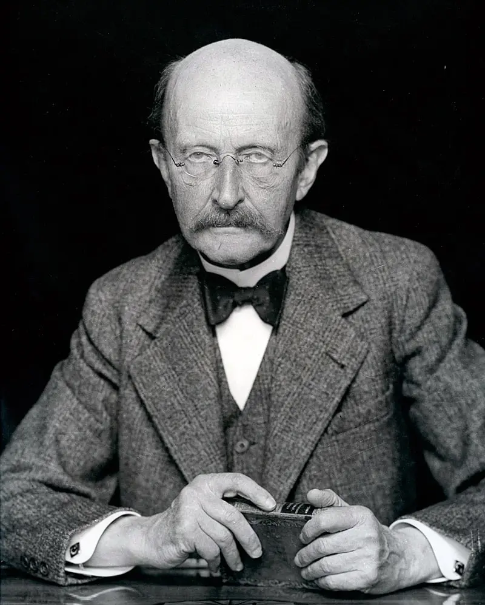
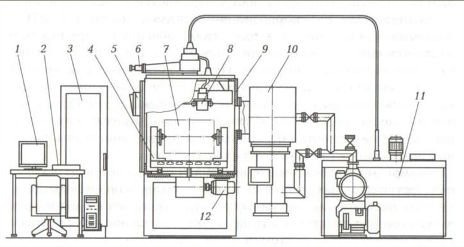

Чарльз Таунс

Макс Планк
Александр Прохоров и Николай Басов
Альберт Эйнштейн

Своим появлением лазерный луч обязан фундаментальным достижениям в физике, начало которых было положено в конце XIX века. В течении десятка лет было произведено пять важнейших открытий. Начало положил немецкий физик В. Рентген. Который в 1895 году открыл новую разновидность излучения, за это открытие позднее он получил первую в истории Нобелевскую премию. Француз А. Беккерель открыл радиоактивность в 1896 году, за что также удостоен Нобелевской премии. Свою награду от фонда Нобеля получил и англичанин Дж. Томсон, который не только открыл электрон, но и позднее произвел измерения его заряда.
В 1900 году М. Планк вывел формулу испускательной способности черного тела. В основе его работы лежала новая концепция, которая впоследствии стала фундаментом квантовой теории. Которая в XX веке стала одной из основополагающих теорий в физике. Молодой А. Эйнштейн в 1905 году опубликовал теорию относительности. На мировую научную общественность эти открытия произвели ошеломительное впечатление. Многие исследователи пребывали в замешательстве, потребовалось переосмыслить существовавшие ранее представления. Поскольку новые данные никак не укладывались в рамки классических теорий.
В 1964 году советские академики Прохоров Н.Г. и Басов, А.М., а также и американский физик Ч. Таунс стали лауреатами Нобелевской премии, за теоретическое обоснование и создание лазеров. Таким образом человечество получило в свои руки луч лазера.
Огромную роль в проектирование передовых технологий сварки, а также ее механизацию, конструирование оборудования для сварки, создание основных и сварочных материалов сыграл Институт электросварки им. Е. О. Патона, Центральный научно - исследовательский институт конструкционных материалов «Прометей», Центральный научно-исследовательский институт технологии судостроения.
Чарльз Таунс
Макс Планк
Александр Прохоров и Николай Басов
Альберт Эйнштейн
Космическая промышленность
Медицина
Микроэлектроника
Оборонные предприятия
Высоковольтный кабель
это кабель, используемый для передачи электроэнергии при высоком напряжении. Кабель включает в себя проводник и изоляцию. Кабели считаются полностью изолированными. Это означает, что они имеют полностью рассчитанную систему изоляции, которая будет состоять из изоляции, полупроводниковых слоев и металлического экрана.
Основной анод
электрод электронного или электротехнического прибора или устройства, характеризующийся тем, что движение электронов во внешние цепи направлено от него.
Призма
многогранник, две грани которого являются конгруэнтными (равными) многоугольниками, лежащими в параллельных плоскостях, а остальные грани — параллелограммами, имеющими общие стороны с этими многоугольниками. Эти параллелограммы называются боковыми гранями призмы, а оставшиеся два многоугольника называются её основаниями.
Накальный катод
это электрод, на котором происходит восстановление. К катоду стремятся катионы, потому что он заряжен отрицательно и, согласно законам физики, разноименные заряды притягиваются.
Электронный луч
это поток отрицательно заряженных электронов, движущихся от катода к аноду под действием ускоряющего электрического поля.
Фокусирующая катушка
Электромагнит, создающий магнитное поле для фокусировки электронного пучка.
Сварной шов
участок сварного соединения, образовавшийся в результате кристаллизации расплавленного металла или в результате пластической деформации при сварке давлением или сочетания кристаллизации и деформации.
Обрабатываемое изделие
Изделие которое находится в вакуумной камере
Вакуумная камера
ограниченный объём, в котором создаётся вакуум

По назначению оборудование для ЭЛС состоит из следующих установок: для сварки кольцевых швов трубчатых изделий диаметром 6–140 мм и длиной до 4000 мм с концевыми деталями универсальных для сварки кольцевых, торцовых и продольных швов изделий диаметром до 500 мм, длиной продольного шва до 700 и поперечного до 400 мм; специализированных для сварки различных швов конкретных изделий; энергетического оборудования для комплектования и модернизации электронно-лучевого оборудования, имеющегося на предприятиях заказчика; телевизионного оборудования для наблюдения и ведения луча по стыку; системы регистрации и документирования параметров технологического процесса сварки

Электронная пушка 8 и изделие 7 находятся внутри вакуумной камеры 9. Для настроечных и сварочных перемещений изделия используют манипулятор 4,привод 12 которые обычно располагаются вне камеры. Для визуального контроля над процессом сварки в камере имеются смотровые окна 5 и оптическая система наблюдения 6. Для создания вакуума внутри камеры служит откачная система 10. Силовой энергией пушку снабжает высоковольтный источник питания 11. Контроль и управление процессом осуществляется с пульта 2 или стойки управления 3. В состав установки может входить видеоконтрольное устройство с выводом изображения на монитор 1
Установка СА-252 предназначена для герметизации химически активных материалов в алюминиевых оболочках, оснащена передаточным шлюзом, сборочным боксом с перчаточными узлами, позиционером на 12 изделий.
Установка СА-472 рассчитана на сварку кольцевых швов при укрупнении деталей из металла монокристаллической структуры и приварку крышек к пеналам из тугоплавких материалов.
Установка СА-508 рассчитана на вварку труб в трубные доски, имеет блок параллельного переноса луча, позволяющий выполнять сварку в труднодоступных местах.
Подключить голубой провод к разъёму. На другом конце этого провода есть крокодил, его нужно подключить к свариваемым деталям, без него сварка не будет работать, ибо это предохранительный механизм. Подключить трубку подачи газа. Включить водный автомат и автоматический выключатель станка. Разблокировать кнопку аварийного выключения. Включить чиллер. Надо заправить чиллер водой для этого нужно подключить шланг в чиллер, а другой конец в бутылку с питьёвой водой 18 литров, нажать и удерживать кнопку, пока чиллер заправляет воду, далее включить кнопку LASER и кнопку SPC. Подключить провод управления к податчикам проволки. Заправить проволку в податчик, диаметр проволки от 0.8 до 1.0 мм. Настроить позиционирование сварочной проволки относительно сопла. Отрегулировать скорость подачи проволки.